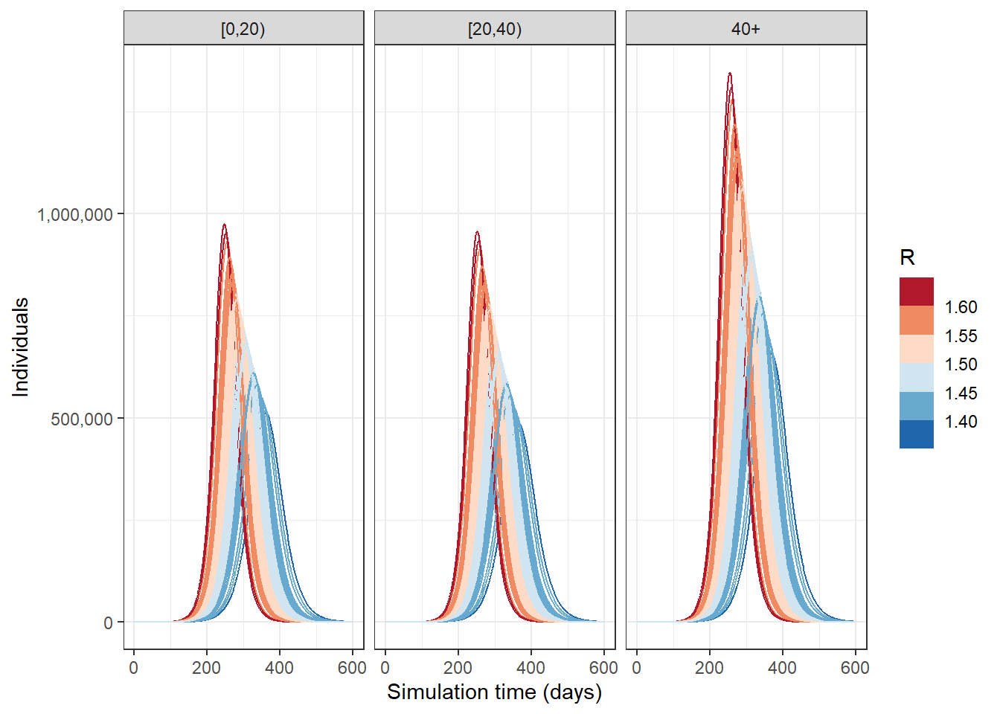

Code
# INSTALL AND LOAD PACKAGES
# Install epidemics from GitHub
pacman::p_load_gh("epiverse-trace/epidemics")
# Load required packages
pacman::p_load(tidyverse, epidemics, socialmixr, reactable)This task covers simulating disease spread using mathematical models. You will learn how to generate disease trajectories, set up model parameters, and account for uncertainty in model simulations.
We first extract a social contact matrix from {socialmixr} for the United Kingdom. A single individual from the youngest age category (under 20 years old) was infected and introduced the disease in a population of 1 million, which were initially fully susceptible to the infection.
# Defining social contact matrix
contact_data <- socialmixr::contact_matrix(
survey = socialmixr::polymod,
countries = "United Kingdom",
age.limits = c(0, 20, 40),
symmetric = TRUE
)
# prepare contact matrix
contact_matrix <- t(contact_data$matrix)
# Define population's initial conditions
initial_i <- 1e-6
initial_conditions_inf <- c(
S = 1 - initial_i, E = 0, I = initial_i, R = 0, V = 0
)
initial_conditions_free <- c(
S = 1, E = 0, I = 0, R = 0, V = 0
)
# combine the initial conditions
initial_conditions <- rbind(
initial_conditions_inf, # age group 1
initial_conditions_free, # age group 2
initial_conditions_free # age group 3
)
# use contact matrix to assign age group names
rownames(initial_conditions) <- rownames(contact_matrix)
# Create demography vector
demography_vector <- contact_data$demography$population
names(demography_vector) <- rownames(contact_matrix)
# Create population object for {epidemics}
uk_population <- population(
name = "UK",
contact_matrix = contact_matrix,
demography_vector = demography_vector,
initial_conditions = initial_conditions
)Here we see the demography:
Here we see the contact matrix:
And here the initial conditions:
We fitted an SEIR to model the transmission of an infectious disease with a basic reproduction number of 1.5, an infectious period of 7 days, and a pre-infectious period of 3 days.
# Defining model parameters
# time periods
preinfectious_period <- 3.0
infectious_period <- 7.0
# specify the mean and standard deviation of R0
r_estimate_mean <- 1.5
r_estimate_sd <- 0.05
# Generate 100 R samples
r_samples <- withr::with_seed(
seed = 1,
rnorm(
n = 100, mean = r_estimate_mean, sd = r_estimate_sd
)
)
# rates
infectiousness_rate <- 1.0 / preinfectious_period
recovery_rate <- 1.0 / infectious_period
beta <- r_samples / infectious_period
# running {epidemic} default model
output <- model_default(
population = uk_population,
transmission_rate = beta,
infectiousness_rate = infectiousness_rate,
recovery_rate = recovery_rate,
time_end = 600, increment = 1
)
# Visualising output
output %>%
mutate(r_value = r_samples) %>%
unnest(data) %>%
filter(compartment == "infectious") %>%
ggplot() +
geom_line(
aes(time, value, color = r_value, group = param_set),
alpha = 3
) +
scale_color_fermenter(
palette = "RdBu",
name = "R"
) +
scale_y_continuous(
labels = scales::comma
) +
facet_grid(
cols = vars(demography_group)
) +
theme_bw() +
labs(
x = "Simulation time (days)",
y = "Individuals"
)
The figure above shows the total number or cumulative amount of individuals in the infectious compartment at each time, across the 100 simulations run for different basic reproduction number values.